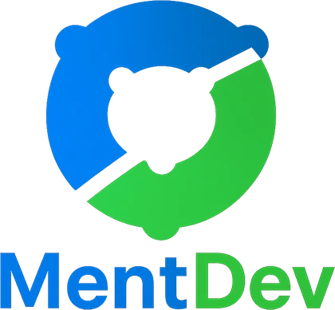

Base de datos del Mundial Qatar 2022
Base relacional de 11 tablas y más de 234 mil eventos (StatsBomb Open Data), con carga automatizada en Python y validación con consultas SQL.
Ver repositorio →Análisis de datos · Business Intelligence · Automatización
Preparo, consulto y visualizo datos con SQL, Python y Power BI, y automatizo procesos con herramientas low-code. Fundador de MentDev.
Soy Ingeniero de Sistemas titulado, con experiencia en desarrollo de software y soluciones tecnológicas, y hoy orientado al análisis de datos y Business Intelligence. Me muevo entre bases de datos relacionales, dashboards y automatización, y me interesa aplicar la tecnología en contextos de impacto social.
Base relacional de 11 tablas y más de 234 mil eventos (StatsBomb Open Data), con carga automatizada en Python y validación con consultas SQL.
Ver repositorio →Serie de misiones de análisis con SQL sobre esa base, guiadas por Devi, la mascota de MentDev. Cada misión es una pregunta resuelta con una consulta. En curso.
Ver repositorio →Dashboard interactivo para explorar indicadores del torneo mediante gráficos, métricas y medidas de análisis.
Ver repositorio →Pokédex interactivo de las generaciones 1 a 3, con filtros y fichas, más análisis de tipos, rankings y evoluciones. Datos de PokéAPI.
Ver repositorio →
Emprendimiento · 2025 – actualidad
MentDev es mi emprendimiento. Desarrollo aplicaciones low-code con Power Apps y SharePoint / Microsoft Lists, automatizaciones con AppSheet, Google Sheets y Google Apps Script, y ofrezco mentorías personalizadas en programación, desarrollo web y electrónica para estudiantes y profesionales.
Springer · Lecture Notes in Networks and Systems, vol. 1965
Proyecto de tesis con realidad virtual (Unity y Blender) aplicado en pacientes reales con apoyo psicológico. Presentado como ponencia en IOCDF, conferencia sobre TOC, por su interés para la comunidad. Publicado en Information Technology & Systems (ICITS 2026), pp. 529–547. Autores: Zevallos Escobedo, L. E., Tunque Quispe, G. F. y Sánchez Atuncar, G.
Ver publicación (DOI) →¿Tienes un proyecto de datos o quieres conversar? Escríbeme.